One concept a day. Austrian economics meets Bitcoin.
A 30-day original series by @MarJJhodl,
inspired by Knut Svanholm's Praxeology — The Invisible Hand that Feeds You.
Starting February 12, 2026, I published one praxeology concept per day for 30 consecutive days — connecting Mises' Human Action to Bitcoin through short, accessible posts with original visual cards.
Pill #1 reached 2,245 views organically — roughly 23× my follower count at the time. Below is the full series, with the original tweet text, visual card, and a brief explanation of the concept.
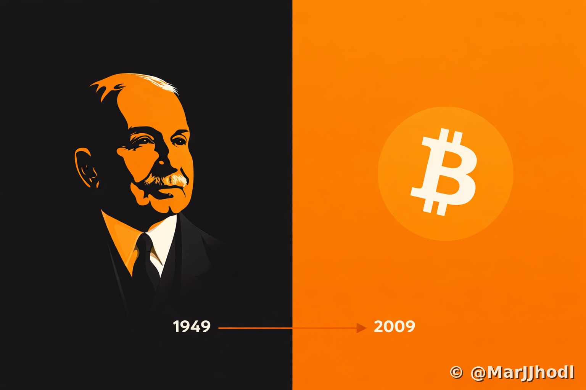
Praxeology — from the Greek praxis (action) — is the science of human action, developed by Ludwig von Mises. Unlike mainstream economics, which tries to model behaviour statistically, praxeology starts from a single axiom: humans act purposefully to move from a less satisfactory to a more satisfactory state. Everything else follows by deduction. Bitcoin is arguably the first monetary system built on the same logic: rule-based, predictable, and indifferent to political pressure.
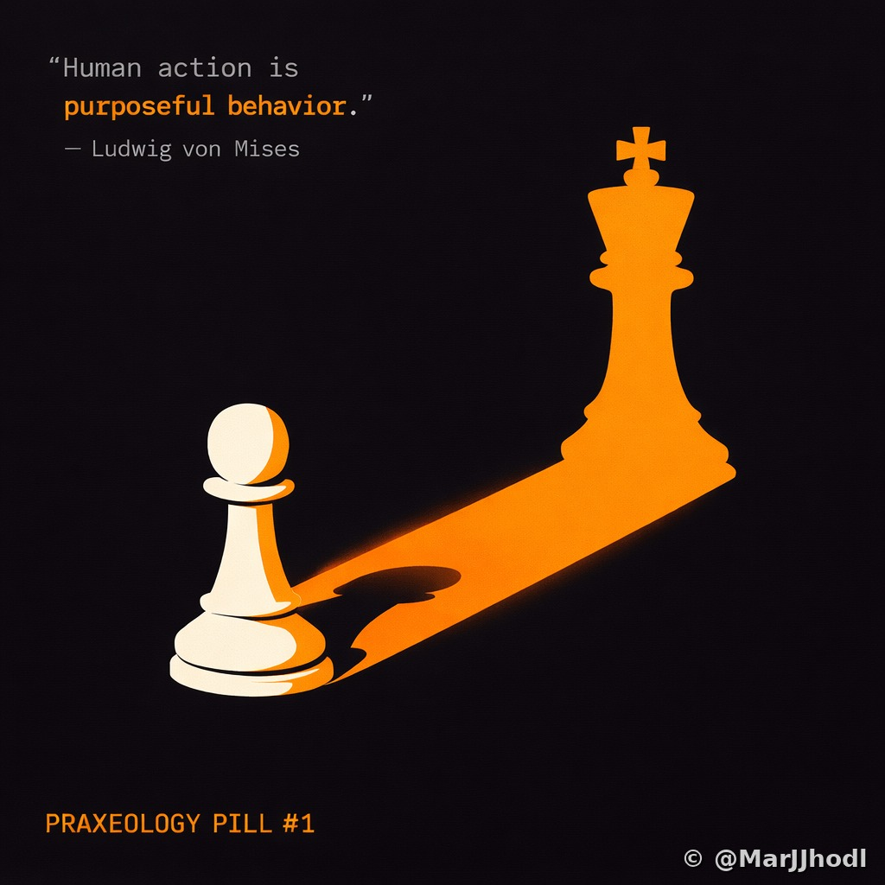
The axiom of human action is the foundation of all praxeology: every human being, always and everywhere, acts with intention. Action is purposeful behaviour aimed at removing some felt uneasiness. It doesn't matter if the goal is grand or trivial — buying coffee, saving money, staying in bed — it is still an act guided by a preference. This is not psychology; it is logic. And because Bitcoin requires a deliberate choice to hold, it is one of the clearest examples of the axiom in action.
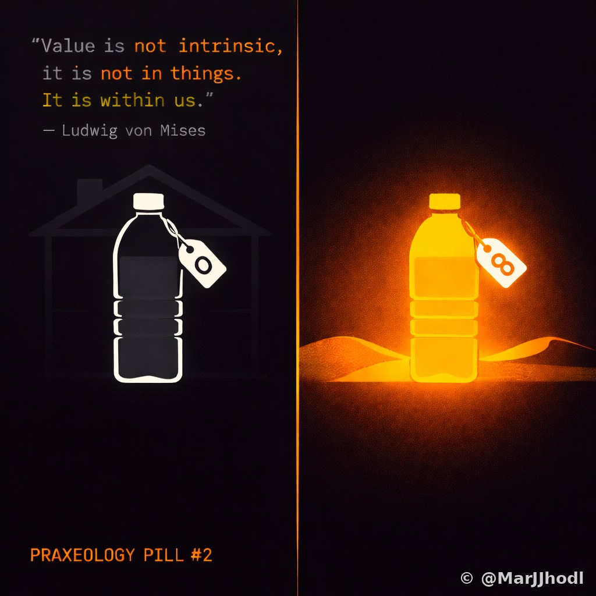
Before Mises, economists tried to ground value in objective qualities — labour hours, raw material cost, utility. The subjective theory of value overturned this: value exists in the mind of the person making a choice, not in the object being chosen. The same bitcoin is worth very little to someone who doesn't understand it and everything to someone who does. Price is not a measure of intrinsic worth — it is the meeting point of two subjective valuations at a given moment.
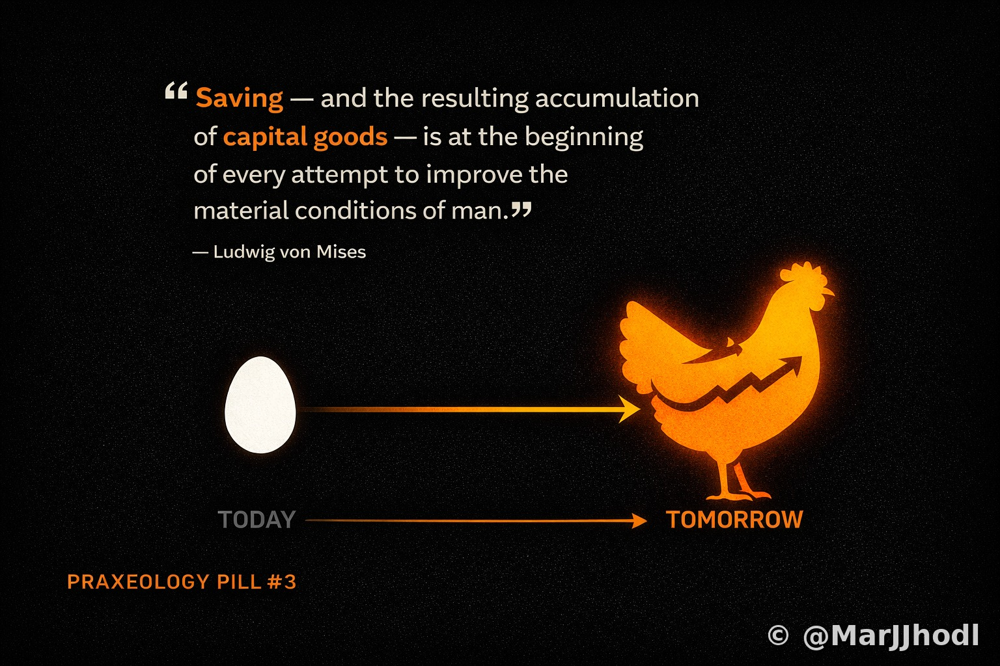
Time preference is the degree to which you value present goods over future goods. It is universal — all humans prefer to have something now rather than later, all else equal. The question is by how much. High time preference leads to spending, short-termism, and debt. Low time preference leads to saving, investing, and building. Fiat money with its built-in inflation is a tax on low time preference — it punishes those who wait. Bitcoin, with its fixed supply and predictable issuance, systematically rewards patience.
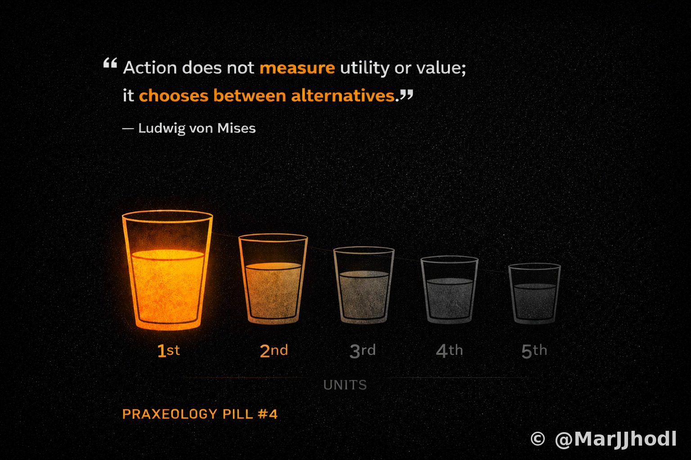
You never value a good in the abstract — you value the next unit of it, given your current situation. This is the law of marginal utility. The first unit satisfies your most urgent need; each subsequent unit satisfies a progressively less urgent one. This is why prices fall as supply increases: more units available means each unit serves a lower-ranked end. It also explains the classic "diamond-water paradox" — water is more useful in total, but diamonds are scarcer, so each additional unit of diamond satisfies a higher-ranked preference than additional water.
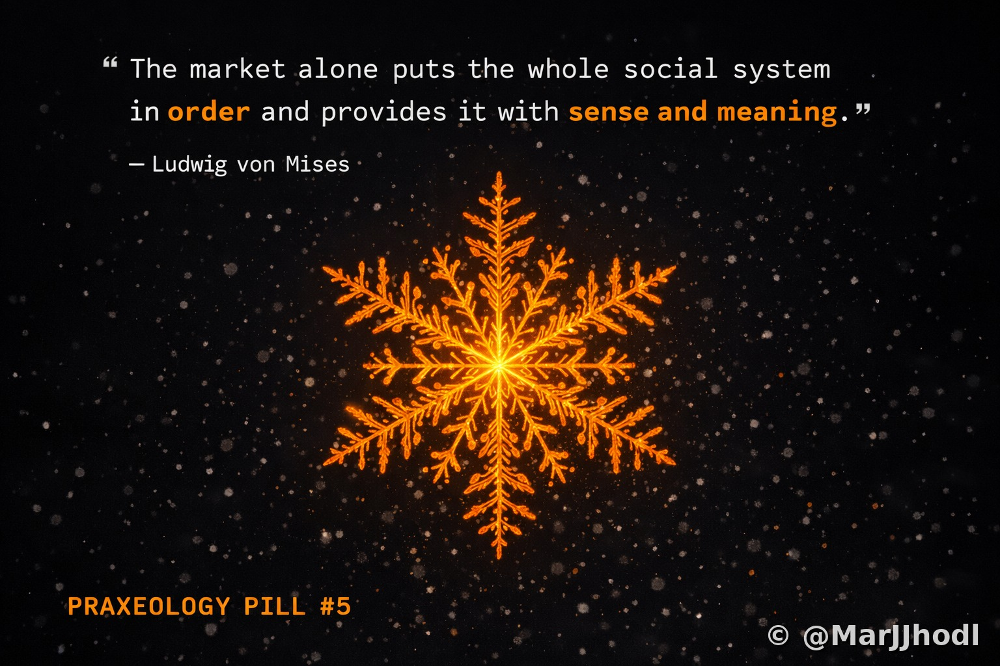
Complex, functional systems can emerge without any central designer. Language, common law, markets, prices — none were invented by a committee. They evolved from the voluntary interactions of individuals pursuing their own ends. Friedrich Hayek called this "spontaneous order." The belief that order requires a planner is one of the most persistent errors in political thinking. Bitcoin's protocol is the most technically precise example of spontaneous order in modern history: global, consistent, leaderless, and self-correcting.
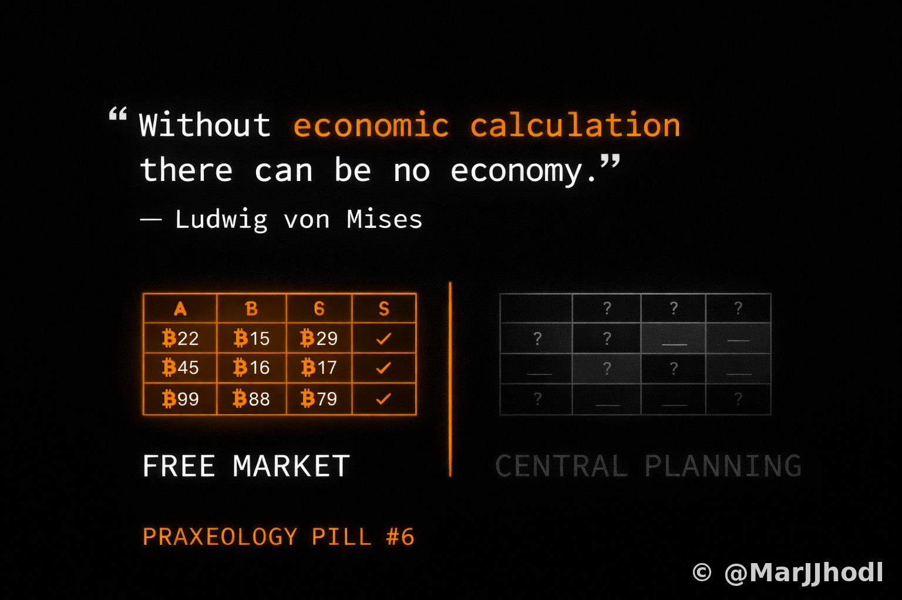
In 1920, Mises published his "Economic Calculation in the Socialist Commonwealth" — a paper that proved, logically, that central planning must fail. Without private property and free prices, there is no mechanism to calculate whether resources are being used efficiently. Prices in a free market carry aggregated information about scarcity, preference, and opportunity cost that no committee can replicate or replace. The Soviet experiment ran for 70 years before collapsing under the weight of this impossibility. Central banking applies the same flawed logic to money itself.
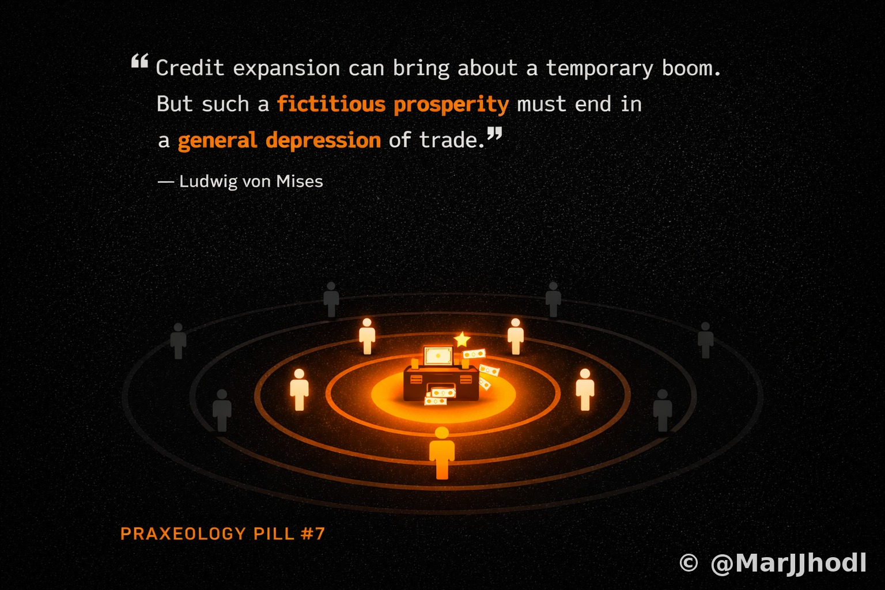
When new money is created, it enters the economy at a specific point — usually through banks and governments — before prices have adjusted. Those who receive it first can spend at the old, lower prices. By the time the new money trickles down to everyone else, prices have already risen. This is the Cantillon Effect, described by Richard Cantillon nearly 300 years ago. It is a structural redistribution of wealth from savers and wage earners to those with access to new money. Bitcoin's fixed supply eliminates this mechanism entirely.
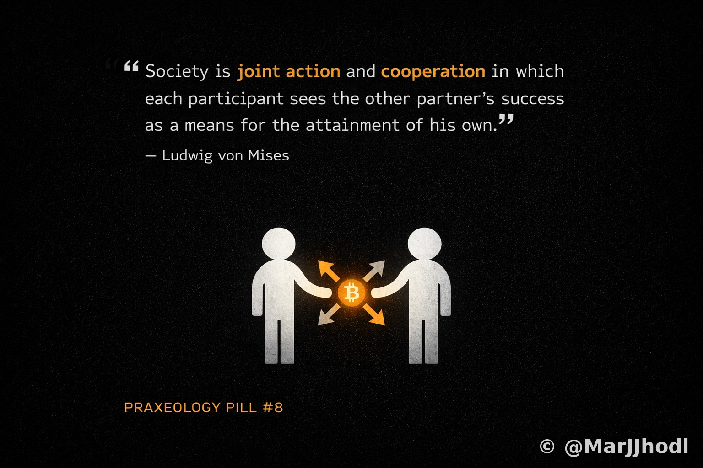
A voluntary exchange only happens when both parties expect to gain from it. If either side expected to lose, they would simply not agree. This means every free trade, by definition, creates value — not just transfers it. This is the core insight of catallactics: the free market is not a zero-sum competition but a positive-sum engine of mutual benefit. Bitcoin's permissionless settlement layer is the first monetary system in history to make voluntary exchange truly unstoppable.
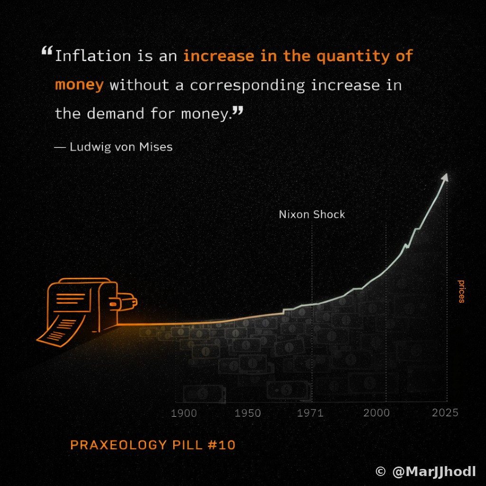
The word "inflation" has been deliberately confused. In classical economics, inflation means an increase in the money supply. Rising consumer prices are the downstream consequence, not the phenomenon itself. When governments and central banks expand the money supply, each existing unit loses purchasing power — this is a hidden tax on every holder of the currency. Bitcoin's issuance schedule is written into the protocol: the supply grows at a predetermined, decreasing rate until it reaches 21 million, permanently. No one can change this by decree.
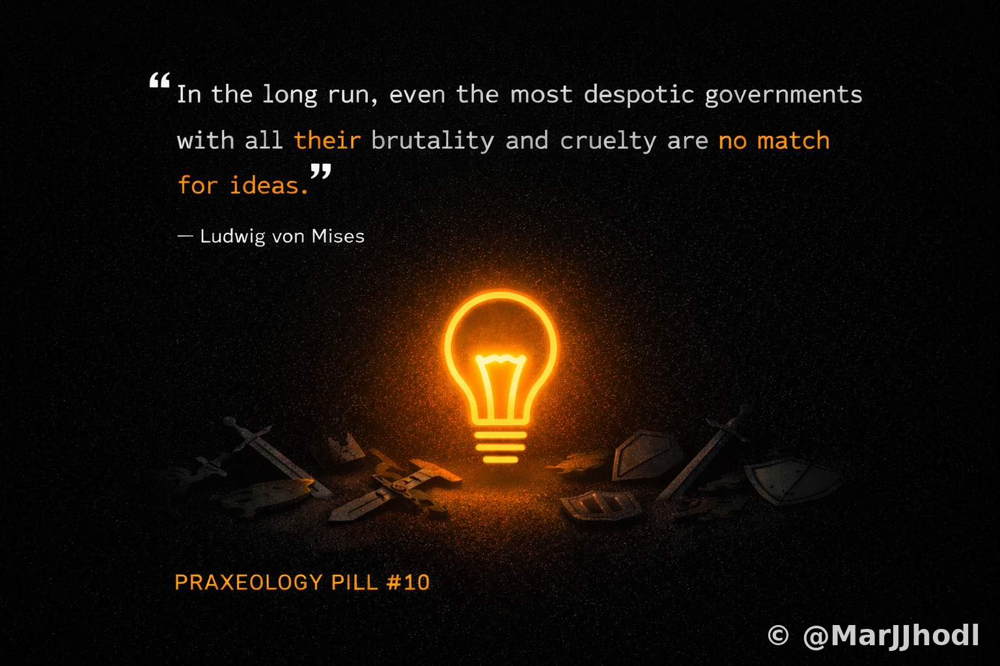
Mises argued that the ultimate source of political power is not force but ideas. Governments depend on the consent — or at least the passive acceptance — of the governed. When an idea becomes widely enough understood and believed, no army can suppress it indefinitely. Censorship buys time; it cannot change truth. Bitcoin is, at its core, a mathematical idea that anyone can verify independently. You cannot ban mathematics. Countries that try to ban Bitcoin end up exporting capital and talent instead.
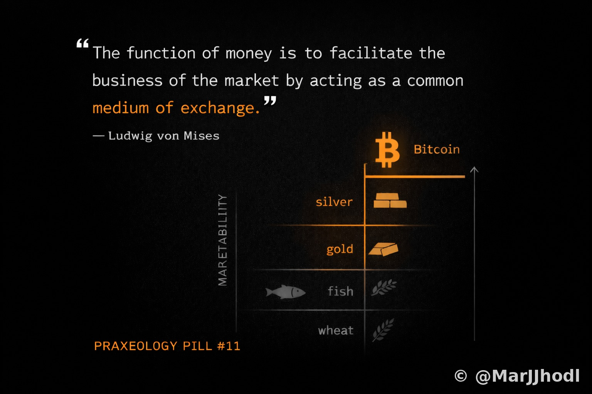
Barter requires that both parties want exactly what the other has, at the same moment. At any scale, this is impossible. Money solves this by acting as a universally acceptable intermediate good — you trade your labour for money, and money for whatever you actually need. This is the primary function of money. Fiat currencies perform this function while also serving as tools of monetary policy and capital control. Bitcoin performs the exchange function purely, without the additional political layer.
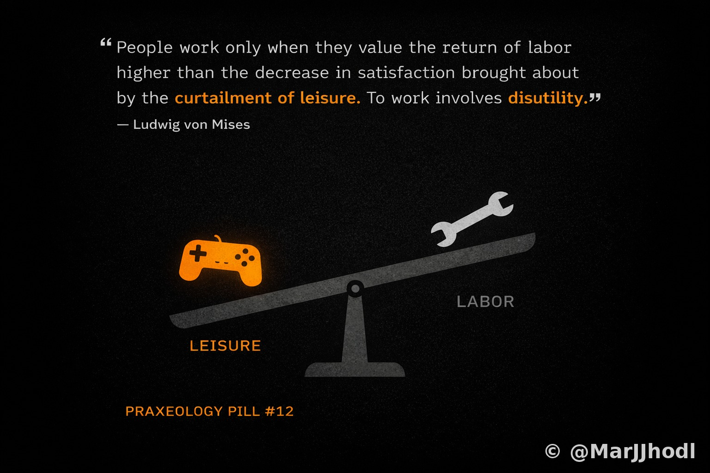
In praxeology, labour is not just physical effort — it is the purposeful application of time and energy toward a goal. You work because the expected outcome ranks higher on your value scale than the leisure you give up. Labour is always a trade-off: you sacrifice time that could have been spent otherwise. This makes labour inherently costly, which is why it must be compensated. When the money you earn slowly loses its purchasing power, the exchange becomes unfair — you gave real time; you got inflated paper in return.
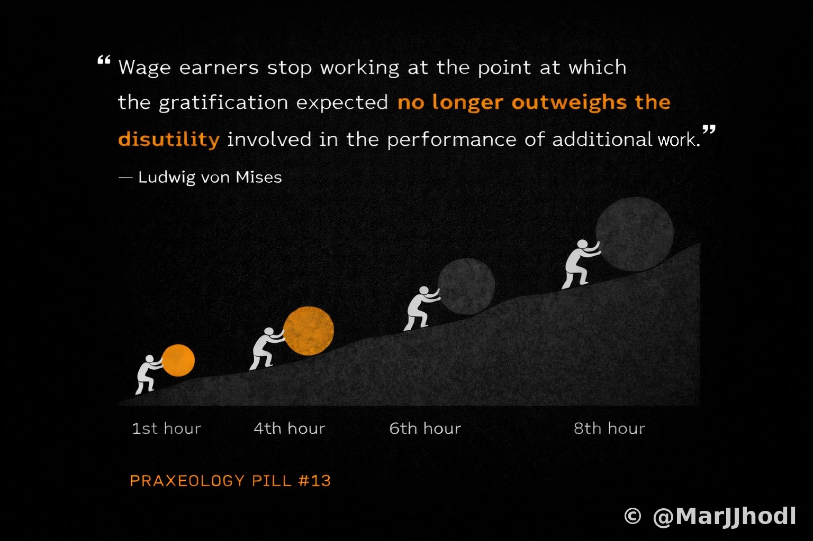
Labour has a cost beyond the hours spent: it is unpleasant in itself. Mises called this the disutility of labour. Each additional hour of work is harder than the last — not only because of fatigue, but because you are sacrificing increasingly valuable leisure time. This is why wages must rise to attract workers to longer hours, and why people stop working when the marginal reward no longer justifies the marginal sacrifice. Sound money that holds its value means you need to work fewer hours to achieve the same financial security.
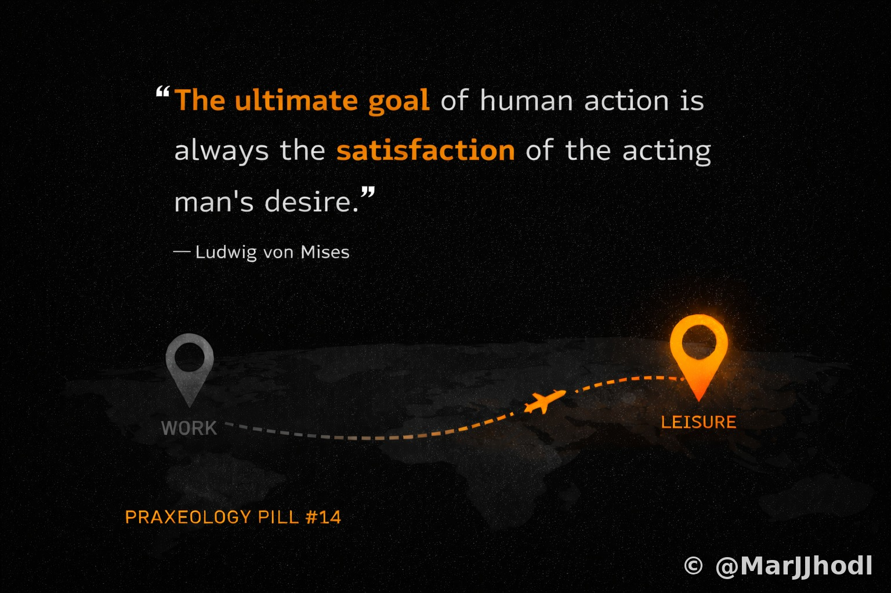
In praxeology, leisure is not idleness — it is the direct enjoyment of life that all productive activity ultimately aims at. You don't work to work. You work to live. Leisure is the final consumer good: the trip, the time with family, the creative project pursued for its own sake. All labour, all saving, all investment is a means to this end. Inflation erodes the purchasing power of what you save — which means it quietly steals hours of your life that you already spent working.
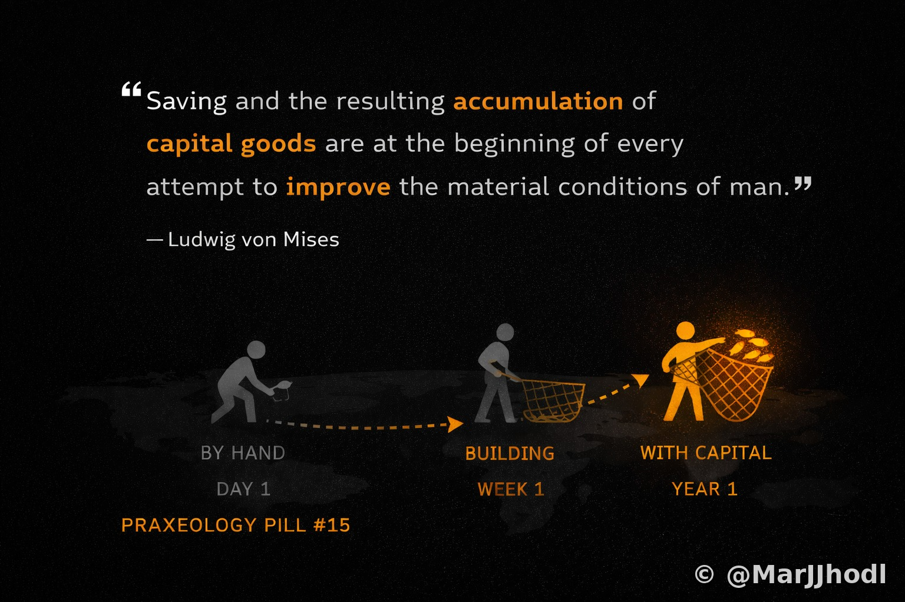
Capital is the result of choosing not to consume everything you produce. Instead of eating all the fish today, you invest time in building a net — a capital good — that multiplies your future productivity. Capital is therefore stored time and stored labour. The more capital an economy accumulates, the more productive it becomes, and the higher the standard of living for everyone. Inflation destroys capital formation by punishing saving. Bitcoin is the hardest form of capital preservation ever created: a store of time that no one can silently drain.
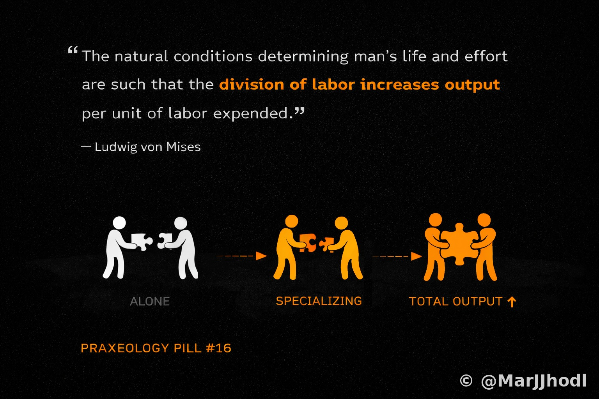
The division of labour is one of the most powerful forces in human civilisation. When individuals specialise in what they do best and trade the surplus, total production increases dramatically — even if one person is worse at everything than another (comparative advantage). A subsistence farmer who tries to do everything produces little. A specialist who trades produces far more. The more participants in a trading network, the more specialisation is possible, and the higher the living standard for all. Bitcoin's borderless, permissionless payment layer expands this network to every human on earth.
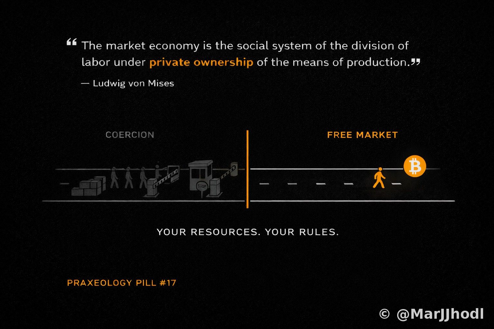
Capitalism, in the praxeological sense, is not a political ideology or a system imposed from above. It is the natural outcome of individuals owning property and acting freely. When people can direct their own resources — time, savings, tools — without coercion, they tend to invest, specialise, and trade. The result is growing wealth and rising living standards. What most people call "capitalism" today is a heavily regulated, state-distorted system with little resemblance to free markets. Bitcoin introduces a layer of the economy where the rules are enforced by mathematics, not politics.
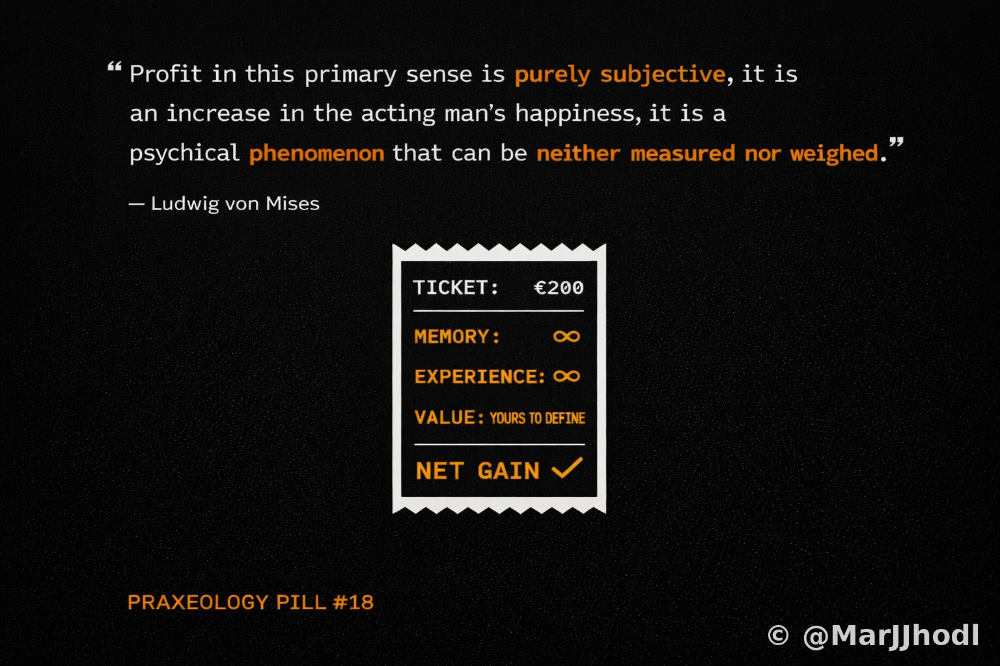
Not all value can be measured in money. Praxeology distinguishes between exchangeable gains — things that can be traded and priced — and non-exchangeable gains: meaning, relationships, experience, beauty. Both are real. Both motivate action. Economic models that only track monetary profit systematically misunderstand human behaviour. The person who takes a lower-paying job for more time with their family is not making an irrational choice — they are valuing something that doesn't show up on a balance sheet. Bitcoin provides an honest monetary signal; what you do with your life is beyond the ledger.
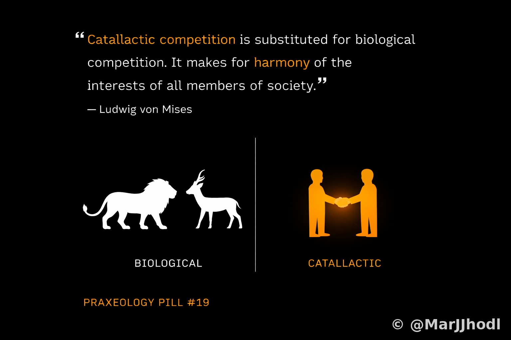
Catallactics is the branch of praxeology that studies the market order. Its defining insight is that market competition is fundamentally different from biological competition. In biology, competition is zero-sum: resources taken by one are unavailable to others. In the market, you win by serving others better — by offering a product, a price, or a service that your competitors cannot match. The customer gains, you gain, your competitor is incentivised to improve. Everyone benefits. Bitcoin mining is a perfect analogy: miners compete fiercely, but the winner provides a service to the entire network.
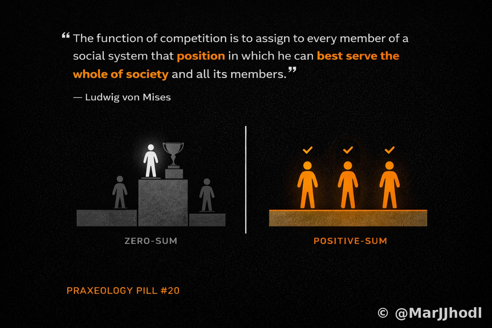
Most people unconsciously apply a zero-sum mental model to economics: if someone gains, someone must lose. This is true in redistribution, but not in voluntary exchange. When two people trade freely, both walk away with something they value more than what they gave. Wealth is created, not merely shuffled. This positive-sum nature of markets is the reason why trading nations grow richer together, while warring nations impoverish each other. Bitcoin operates on the same logic: participation in the network creates value for all participants, not at the expense of any.
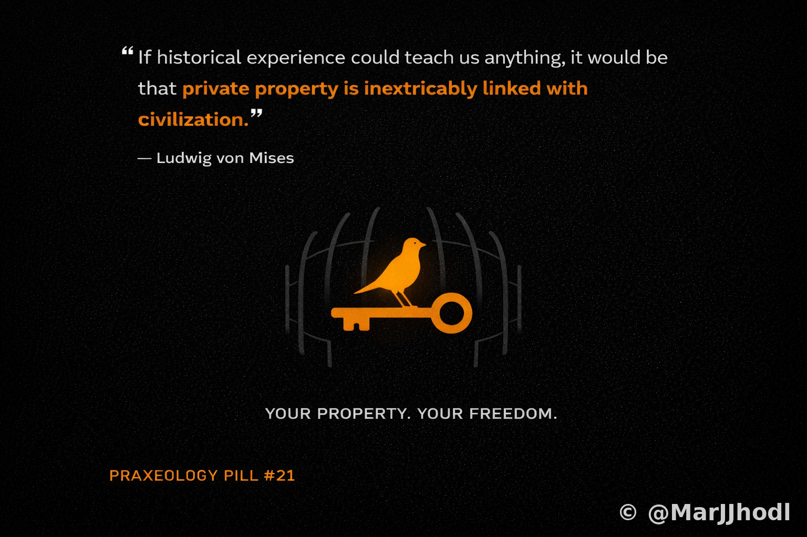
Property rights are not a feature of capitalism — they are the foundation of human freedom. Without the ability to own and control the products of your labour, your choices are ultimately subject to someone else's approval. A government that can confiscate your savings, freeze your account, or inflate away your earnings owns a share of your life that you never agreed to give. Bitcoin's self-custody model makes property rights enforceable at the individual level for the first time in monetary history: not your keys, not your coins is not a slogan — it is a law of cryptography.
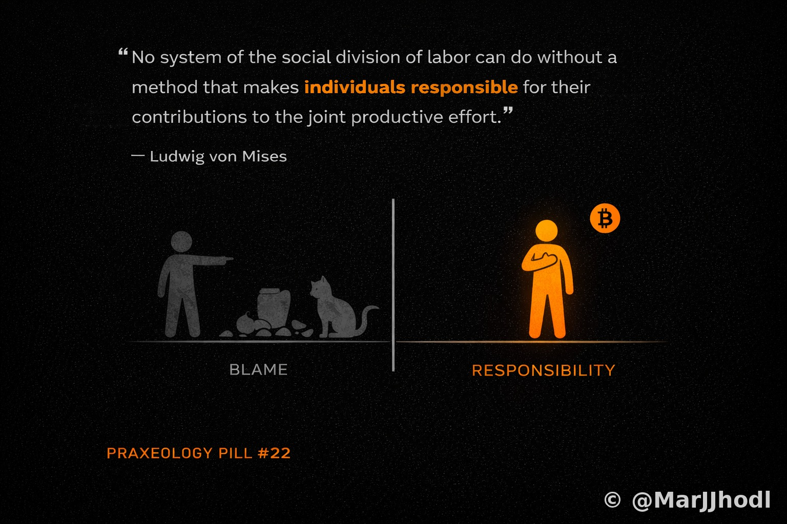
Freedom and responsibility are two sides of the same coin. A system that protects you from the consequences of your choices also strips you of the incentive to make better ones. Bailouts, subsidies, and safety nets are not neutral — they transfer the cost of bad decisions from those who made them to those who didn't. The result is a systematic reduction in accountability and, over time, in the quality of decisions made. Bitcoin's design — irreversible transactions, no chargebacks, self-custody — is not a flaw. It is the purest expression of individual accountability in a monetary system.
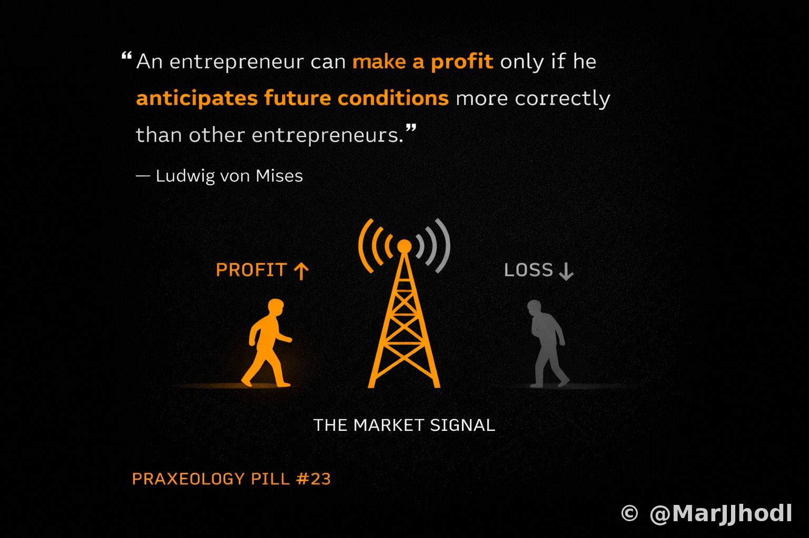
Profit and loss are not moral judgements — they are information. Profit signals that resources were used to create more value than they consumed, and that production should expand. Loss signals the opposite: resources were wasted, and production should contract or redirect. Together, they guide capital toward its highest-valued uses without any central authority needing to intervene. When governments subsidise failing industries or bail out banks, they sever this feedback loop. The economy continues allocating resources — but toward political priorities, not human needs. Bitcoin's price is a signal that no one controls.
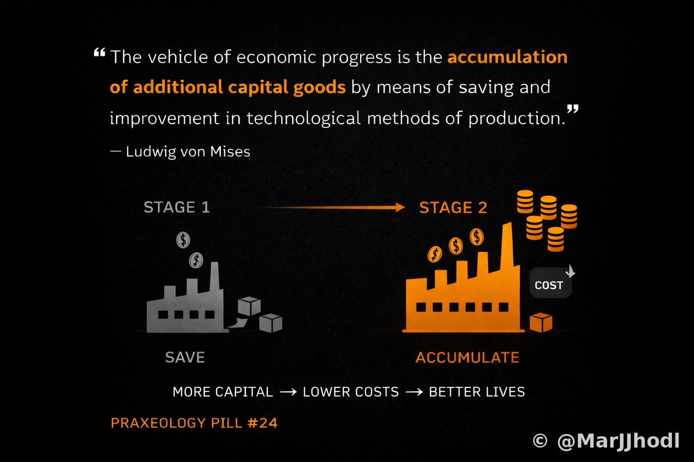
The dramatic rise in living standards over the past two centuries is not a mystery — it is the result of capital accumulation compounding over time. Entrepreneurs who earn profit and reinvest it create better tools, more efficient processes, and cheaper products. Each generation inherits a larger capital stock than the last and can therefore produce more with less effort. This is why the average person today lives better in material terms than kings did 200 years ago. Inflation is a tax on this process: it discourages saving, penalises reinvestment, and consumes the capital stock that future generations would otherwise inherit.
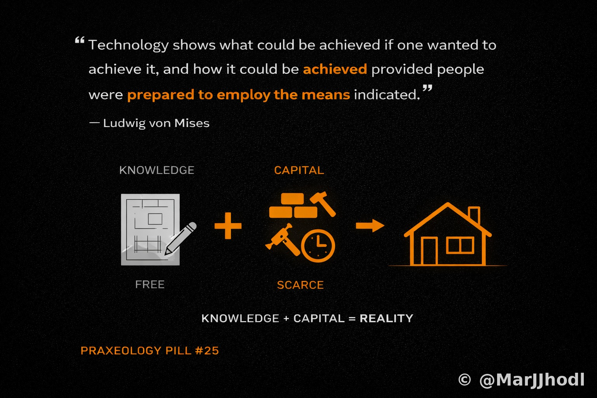
A common illusion of the information age is that knowledge alone creates progress. It doesn't. Knowledge is a necessary but not sufficient condition for innovation. Every technology — from a new drug to a new factory — requires capital: the accumulated savings and tools that make physical production possible. The idea for a solar panel is useless without the materials to build it, the equipment to manufacture it, and the labour to install it. All of this requires capital formed by prior saving and investment. Monetary expansion creates the illusion of capital; it does not create the real thing.
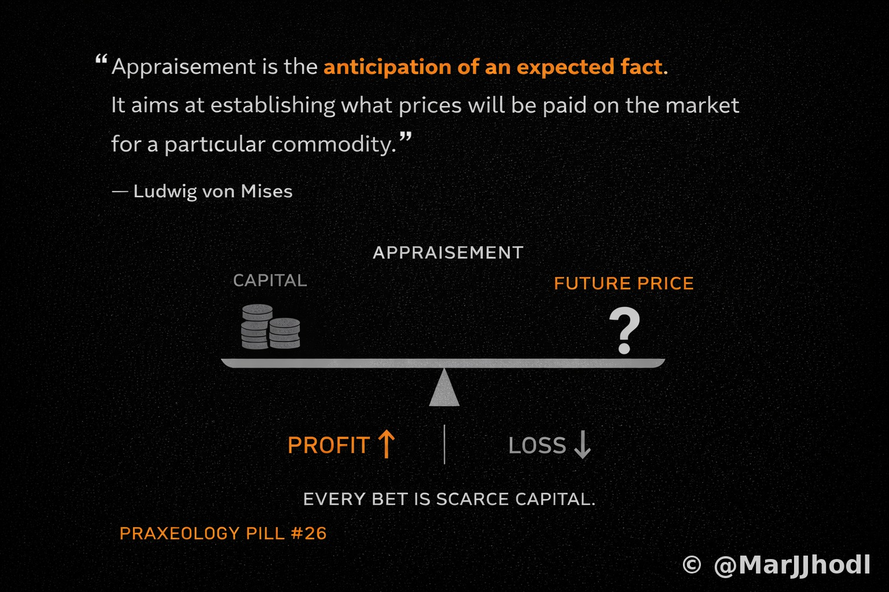
Appraisement is the entrepreneur's act of estimating future market prices in order to make production decisions today. Every business decision is a bet on the future: you buy inputs at today's prices hoping to sell outputs at tomorrow's prices. Get the estimate right and you profit — meaning you correctly anticipated what people would value. Get it wrong and you lose — meaning you misread demand and wasted resources. This process of entrepreneurial appraisement, multiplied across millions of actors, is what guides production to meet human needs. Monetary manipulation distorts the price signals on which these estimates rely, systematically misdirecting capital.
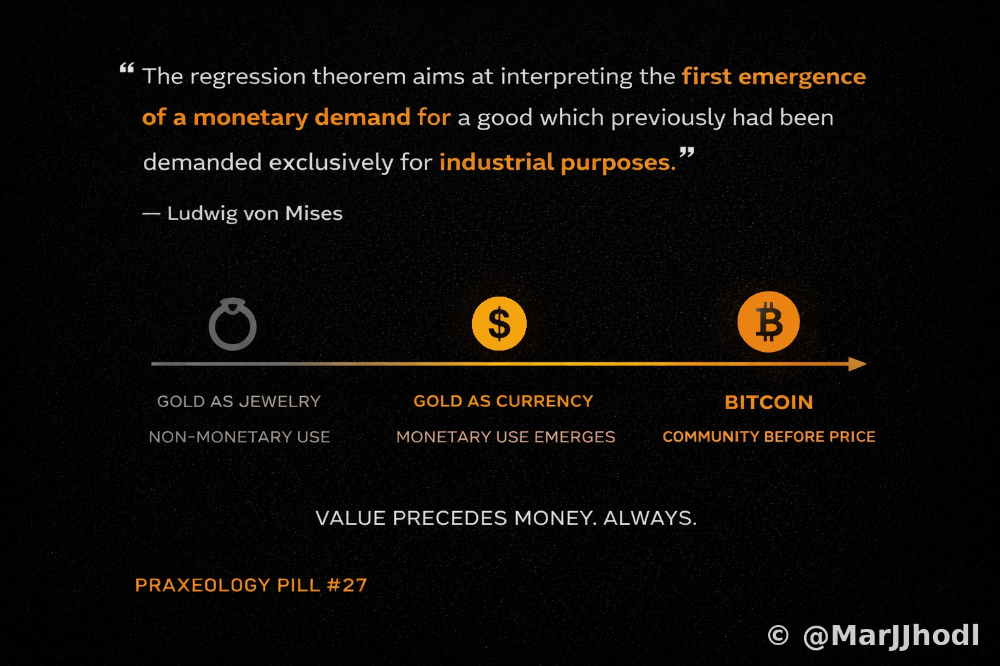
Mises' Regression Theorem answers a fundamental question: how does money acquire its value in the first place? His answer: every money traces its value back to a time when it was valued for non-monetary reasons. Gold was a decorative metal before it became a currency. Shell beads had ceremonial value before they became tokens of exchange. A government cannot simply decree something valuable — acceptance must grow organically from prior usefulness. This is why fiat currencies only work when they inherit credibility from a gold-backed predecessor. Bitcoin's origin — a whitepaper, a codebase, a community of cypherpunks — was non-monetary before the first price was ever quoted.
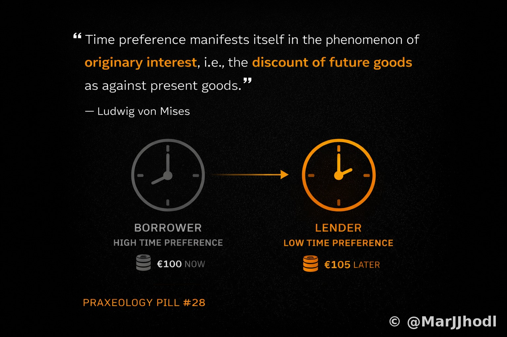
Interest is not a financial invention or a form of exploitation — it is the market expression of time preference. All humans prefer present goods to future goods, all else equal. Interest is the premium that compensates lenders for giving up present purchasing power. When central banks artificially lower interest rates, they distort this signal: they make it appear that society has saved more than it has, encouraging investment in projects that cannot be completed without real capital. This is the Austrian theory of the business cycle — a boom built on a false signal, followed by an inevitable bust. Bitcoin's protocol has no mechanism for interest rate manipulation.
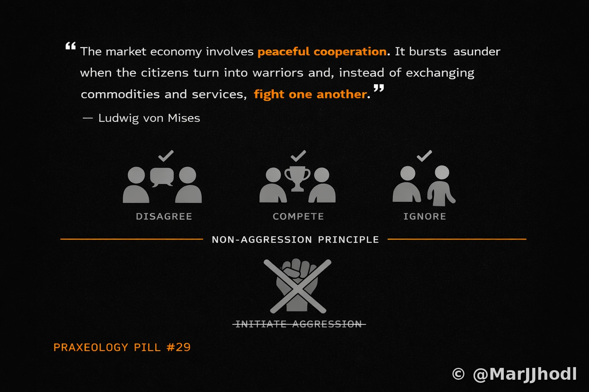
The Non-Aggression Principle (NAP) states that it is illegitimate to initiate force against another person or their property. You may compete, criticise, ignore, or walk away — but you may not coerce. This single rule, applied consistently, is the ethical foundation of the free market and of all peaceful social cooperation. Taxation is a coercive transfer; inflation is a coercive transfer hidden behind monetary mechanics. Bitcoin cannot be used to coerce: no one can be forced to accept it, and no one can prevent others from holding it. Participation is always voluntary.
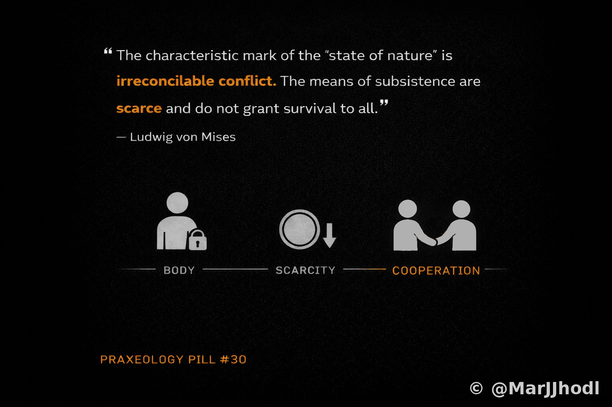
Natural law does not depend on legislation or tradition — it is derived from facts about human existence that no one can coherently deny. First: you own your body and your labour, because the alternative — that someone else owns you — destroys the very concept of voluntary action. Second: external goods are scarce, which means rules about ownership and use are necessary to avoid conflict. Third: cooperation is the only path to civilisation; isolated individuals cannot achieve what voluntary trade enables. Bitcoin is the first monetary network that encodes all three: self-sovereign custody, provably scarce supply, and global voluntary exchange.
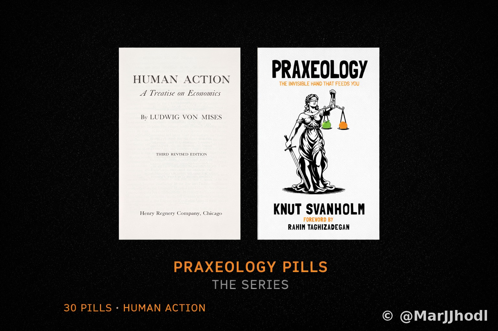
The Italian translation of Knut Svanholm's Praxeology — The Invisible Hand that Feeds You is in progress. If 30 pills got you curious, the book is the next step — a full journey through Austrian economics, written for the Bitcoin era. Follow @MarJJhodl on X for updates on the translation and future series.